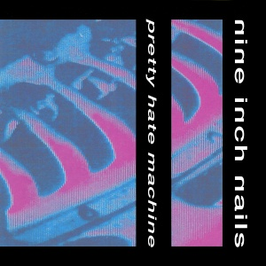
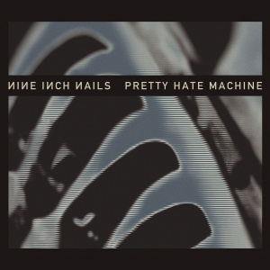
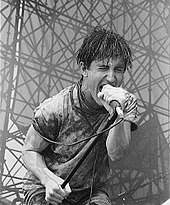
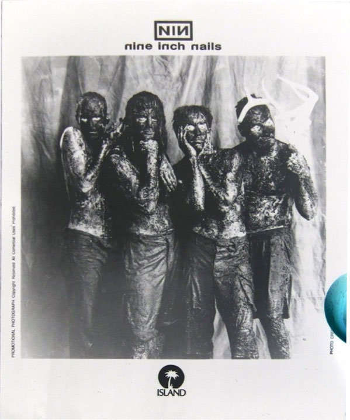
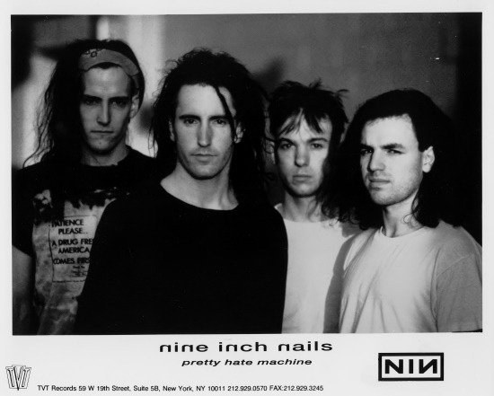
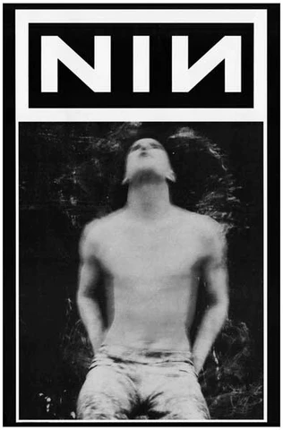
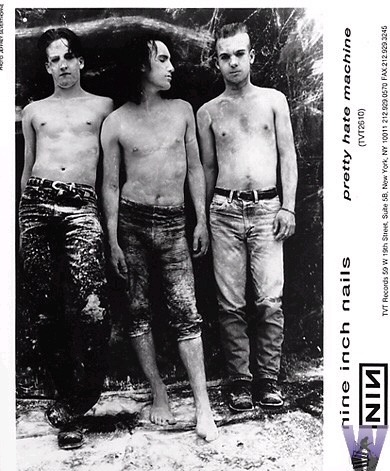
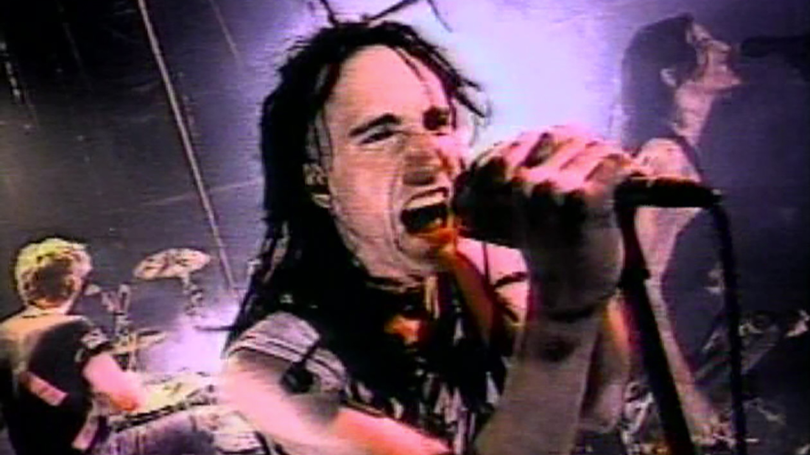

Nine Inch Nails Chronology
Pretty Hate Machine
Pretty Hate Machine (also known as Halo 2)
is the first studio album by Nine Inch Nails.
It was released on October 20, 1989 by TVT Records
in the US, and on October 12, 1991 in the UK, and
was a huge success. The first single off of the album,
Down In It, was released on September 27, 1989. It
received radio airplay for the aforementioned single
as well as subsequent singles Head Like A Hole and Sin.
The former also serves as a companion remix album of
sorts to Pretty Hate Machine.

Halo 2: Pretty Hate Machine
Track Listing
- "Head Like A Hole" – 4:59
- "Terrible Lie" – 4:38
- "Down In It" – 3:46
- "Sanctified" – 5:48
- "Something I Can Never Have" – 5:54
- "Kinda I Want To" – 4:33
- "Sin" – 4:06
- "That's What I Get" – 4:30
- "The Only Time" – 4:47
- "Ringfinger" – 5:40

2010 Remaster (Halo 2R) artwork
Background
While working nights as a handyman and engineer at the Right Track Studio in Cleveland, Ohio, Reznor used studio "down-time" to record and develop his own music. Playing most of the keyboards, drum machines, guitars, and samplers himself, he recorded a demo. The sequencing was done on a Macintosh Plus. Reznor mainly used an E-mu Emax, Prophet VS, Oberheim Xpander, and Minimoog as synthesizers.
With the help of manager John Malm Jr., he sent the demo to various record labels. Reznor received contract offers from many of the labels, but eventually signed with TVT Records, who were known mainly for releasing novelty and television jingle records. Pretty Hate Machine was recorded in various studios with Reznor collaborating with some of his most idolized producers: Flood, Keith LeBlanc, Adrian Sherwood, and John Fryer. Much like his recorded demo, Reznor refused to record the album with a conventional band, recording Pretty Hate Machine mostly by himself.
"A lot of it sounds immature to me now," he stated in 1991 of the recordings that were then two years old. "At first it totally sucked. I became completely withdrawn. I couldn't function in society very well. And the LP became a product of that. It's quite small scale, introverted, claustrophobic – that's the feel I went for."
Reznor discussed the recording and touring of Pretty Hate Machine in the April 1990 issue of Keyboard. He used an E-mu Emax because it produced a high-end buzzing noise when transposing down sounds. Rough and first takes of vocals and guitar were used to contrast the quantized drums and bass. Reznor hated the factory sounds of the Emax but had not transferred anything from his old Emulator, and used samples from his record collection for all the drum sounds. He initially expected to use real drum sounds when recording the album, but in the end he and the producers merely equalized his drum samples.
After the album was released, a recording known as Purest Feeling surfaced. The bootleg album contains early demo recordings of many of the tracks featured on Pretty Hate Machine, as well as a couple that were not used ("Purest Feeling", "Maybe Just Once", and an instrumental introduction to "Sanctified" called "Slate").
Music and lyrics
"I wasn't proud of a lot of the things I was saying," Reznor recalled, "but I said to myself, 'Well, no one's going to hear this stuff anyway.' ... The record is honest and that's where its power came from."
Unlike the industrial music of Nine Inch Nails' contemporaries, Pretty Hate Machine displays catchy riffs and verse-chorus song structures rather than repetitive electronic beats. Reznor's lyrics express adolescent angst and feelings of betrayal by lovers, society, or God. Themes of despair are collocated with lovesick sentiments. Pitchfork's Tom Breihan categorized it as a synth-pop album that was shaped by industrial music's "nascent new-wave period rather than its subsequent styles." According to Breihan, the beats were muscular, but not in the vein of metal or post-punk, and that the most rock-inspired song on the album was "Head Like a Hole".
Journalist Jon Pareles described the album as "electro-rock or industrial rock, using drum machines, computerized synthesizer riffs and obviously processed sounds to detail, and usually denounce, an artificial world." Tom Popson of the Chicago Tribune called it a dance album partly characterized by industrial dance's aggressive sound: "Reznor's electronics-plus-guitar LP also carries a brighter techno-pop element that might remind some of Depeche Mode. Things occasionally mellow out to moody atmospherics, while Reznor's vocals range from whispers to screams." PopMatters' AJ Ramirez regarded the album as "a synthesizer-dominated industrial dance record that on occasion slipped under the alternative rock banner."
Reznor has humorously described Pretty Hate Machine as "the all-purpose alternative album," remarking that "if you want to stage dive to it, you can, but if you're a big Depeche Mode fan, you can get what you need out of it as well." Reznor further stated: "I like electronic music, but I like it to have some aggression. That 'first wave' of electro music – Human League and Devo – that's the easiest way to use it. To be able to get some humanity and aggression into it in a cool way, that's the thing ... Pretty Hate Machine is a record you can listen to and get more out of each time. To me, something like Front 242 is the opposite: great at first but, after 10 listens, that's it."
In a commentary on the album, Tom Hull said that Reznor's "notion of industrial is closer to New Order new wave, but with a harder metallic gleam and more dystopian attitude."
Touring
In 1990, Reznor quickly formed a band,
hiring guitarist and future Filter frontman
Richard Patrick, and began the Pretty Hate
Machine Tour Series, in which they toured
North America as an opening act for alternative
rock artists such as Peter Murphy and The Jesus
and Mary Chain. Nine Inch Nails' live
set at the time was known for louder, more
aggressive versions of the studio songs. At
some point, Reznor began smashing his equipment
onstage (Reznor preferred using the heel of
his boots to strip the keys from expensive
keyboards, most notably the Yamaha DX7);
[citation needed] Nine Inch Nails then
embarked on a world tour that continued
through the first Lollapalooza festival
in 1991 and culminated in an opening slot
to support Guns N' Roses on their European tour.

Reznor during the 1991 Lollapalooza festival
Commercial performance
Released on October 20, 1989, Pretty Hate Machine was a commercial success and entered the Billboard 200 in February 1990. Although it peaked at number 75 on the Billboard 200, the album gained popularity through word of mouth and developed an underground following. Pretty Hate Machine was certified Gold by the Recording Industry Association of America (RIAA) on March 3, 1992, two years after the album's initial release, for shipping 500,000 units in the USA. Three years later in 1995, it became one of the first independently released records to attain a Platinum certification. It eventually garnered a triple Platinum certification on May 12, 2003, with three million copies sold in the United States. Pretty Hate Machine spent a total of 115 weeks on the Billboard 200 chart, tying their sophomore album, The Downward Spiral as their longest charting effort.
The album was also certified Silver by the British Phonographic Industry (BPI) on November 1, 1995, following its number 67 peak on the UK Albums Chart.
Photos




